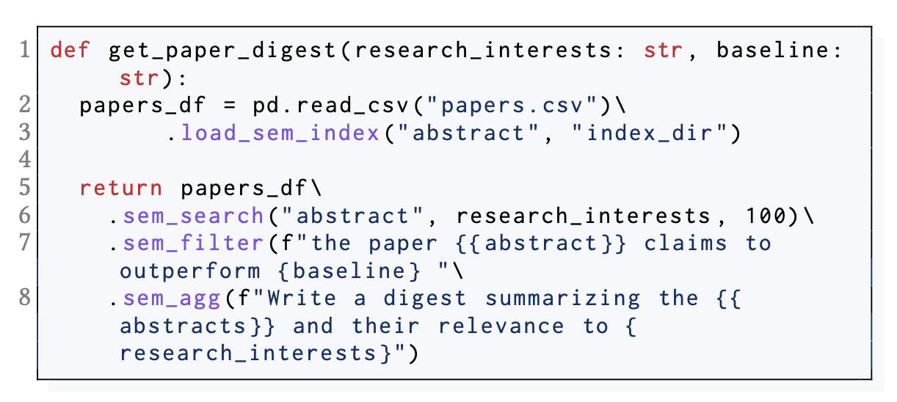
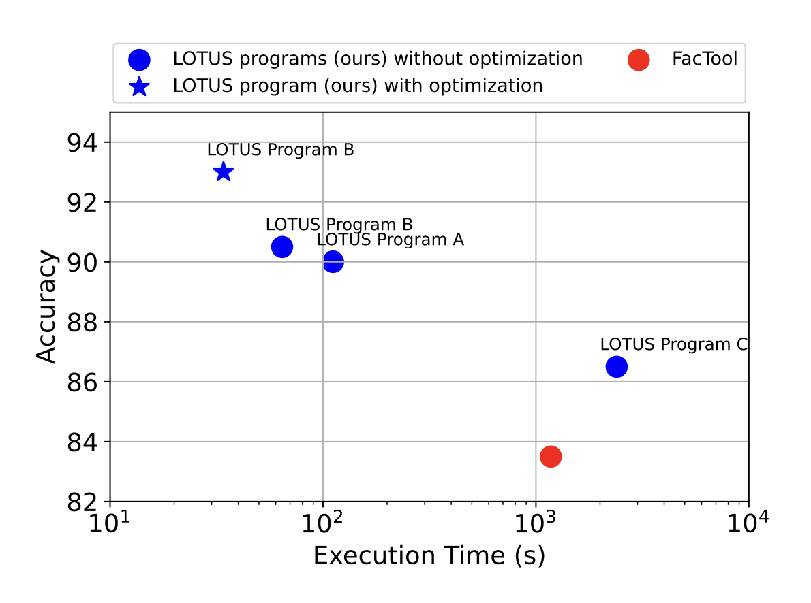

Key Insights
The Lotus framework is a sophisticated method that integrates structured and unstructured data through a unique set of semantic operators. These operators, including semantic filtering, entity recognition, and cross-domain alignment, allow for advanced contextual querying, enhancing the interpretability of data relationships.
The system addresses key challenges in using large language models (LLMs) for data processing tasks, including:
- Efficient execution of LLM-based operations over large datasets
- Composition of multiple LLM calls into complex pipelines
- Abstraction of low-level details like model context length limits and algorithm choices
Semantic Operators
LOTUS provides the following key semantic operators:
- Semantic Filters: Return a subset of rows that pass a filtering condition specified by a natural language predicate. For example: "Keep papers that propose a new machine learning algorithm."
- Semantic Joins: Combine data from two tables by evaluating a user-defined natural language predicate. For instance: "Join if the paper's findings support the given hypothesis."
- Semantic Top-K: Rank a set of rows according to user-defined criteria and return the K best matches. Example: "Return the top 5 most relevant papers to the given research question."
- Semantic Aggregations: Perform aggregations over all rows of a table using a commutative and associative natural language function. For example: "Summarize the key findings across all papers in the group."
- Semantic Map: Perform a natural language projection over an existing column to output a new column. Example: "Extract the main hypothesis from each paper abstract."
These operators can be combined to create complex query pipelines as seen in Figure 1 below that demonstrates a LOTUS program that uses these operators to search for relevant papers, filter them based on performance criteria, and generate a summary.

Applications of LOTUS
LOTUS is designed for applications requiring complex reasoning over large amounts of data. Key applications demonstrated in the paper include:
- Fact-checking: LOTUS implements state-of-the-art fact-checking pipelines with improved accuracy and efficiency. The paper demonstrates how LOTUS can reproduce and improve upon the FacTool pipeline for the FEVER dataset.
- Extreme Multi-label Classification: LOTUS reproduces state-of-the-art results for tasks like biomedical literature classification. The paper shows how LOTUS can efficiently classify papers in the BioDEX dataset.
- Search and Ranking: LOTUS enables efficient composition of retrieval and re-ranking operations for improved search quality. The paper demonstrates this on the MS MARCO passage ranking task.
Methodology and Implementation
LOTUS provides a high-level declarative interface for specifying semantic operations using natural language expressions. The system's query engine efficiently executes these operations using various algorithms and optimizations:
- Parallel Batched Inference: LOTUS uses vLLM for efficient batched inference, allowing it to process multiple inputs simultaneously.
- Model Cascades: For operations like semantic filtering and top-k, LOTUS employs a cascade of models, starting with lightweight scoring functions based on log-probabilities of generated tokens.
- Semantic Similarity Indices: LOTUS leverages FAISS for efficient vector similarity search, enhancing performance for operations like semantic joins and search.
- Join Algorithms: The system implements multiple join algorithms, including nested-loop, map-search-filter, and search-filter patterns, choosing the most efficient based on the query and data characteristics.
- Aggregation Strategies: For semantic aggregations, LOTUS uses hierarchical and partitioned aggregation patterns to handle large datasets efficiently.
Detailed Results Summary
| Task |
Result |
| Fact-checking (FEVER dataset) |
- 9.5% accuracy improvement over FacTool (state-of-the-art)
- 7-34× lower execution time
- Best LOTUS program (B) achieved 80.3% label accuracy and 77.8% full accuracy
- With optimizations, Program B achieved 2.5% higher accuracy and 2× faster execution
|
| Extreme Multi-label Classification (BioDEX dataset) |
- Reproduced state-of-the-art result quality (0.9 R@10)
- 800× lower execution time than naive join implementation
- Efficient algorithm processed 4.5M label-document pairs in 1.7 hours
|
| Search and Ranking (MS MARCO) |
- 5.9-49.4% higher nDCG@10 than vanilla retriever and re-ranker methods
- 1.67-10× lower execution time than LM-based ranking methods used in prior works
- Best LOTUS program achieved nDCG@10 of 0.519, outperforming baseline methods
|
Key Figure from the Paper

Figure 2: Accuracy versus execution time (log-scale) for 3 LOTUS programs (A, B, and C) implementing distinct query pipelines for fact-checking on the FEVER dataset. The blue star shows performance with LOTUS optimizations applied to Program B. This figure demonstrates how LOTUS achieves both high accuracy and low execution time compared to baseline methods.